Project Overview
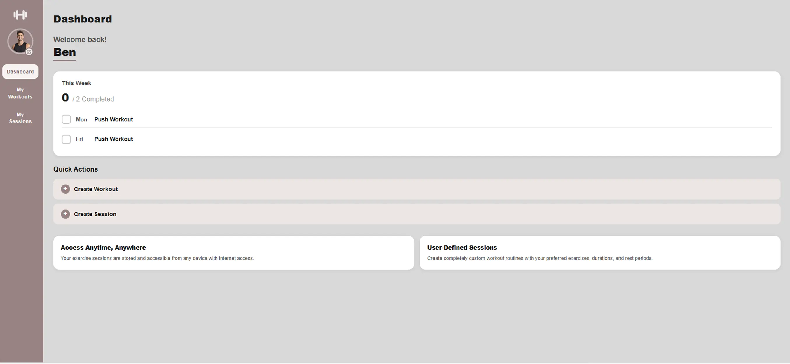
The goal of this project was to design and develop a Gym Planner web application that helps users organise and track their workouts in a clear and structured way. The application focuses on improving the workout planning experience by providing a clean interface where users can plan training sessions, record exercises, and monitor progress.
The project followed a user-centred UX process, beginning with research and ideation before moving through prototyping, development, and testing. The aim was to create a clean, accessible, and responsive tool that supports gym users in maintaining consistent training routines.
View ProjectServices Used
Each tool served a defined role across the design and development workflow.
Understanding The Problem
Many gym users rely on scattered notes, spreadsheets, or memory to track workouts, making it difficult to maintain consistent training plans and monitor progress over time. Without a single structured tool, it becomes easy to lose track of previous sessions, skip progressive overload, or repeat the same workouts without intention.
The opportunity here was to replace that fragmented approach with a single, focused interface. The core question driving the design was: what is the minimum an app needs to do for a gym user to feel fully prepared for and supported throughout their session? This project aimed to solve that by designing a centralised workout planning interface where users can:
Aims of the user
- Organise workout routines
- Record exercises and sets
- Track progress over time
The design focused on simplicity, usability, and clarity, ensuring the platform is easy to use for both beginner and experienced gym users.
Research & Inspiration
Desk research and competitor analysis were conducted across several existing workout and fitness platforms including FitnessAI and Muscle & Strength. The goal was not to copy existing solutions but to understand what conventions gym users already recognise — so the design could feel immediately familiar, reducing the learning curve.
Key patterns that emerged: the most usable platforms separated workout planning (building routines) from session tracking (logging sets in real time) as two distinct modes. Navigation was always kept shallow — users rarely needed to go deeper than two levels to reach their target. This directly shaped the information architecture used in the Gym Planner.
Analysis Observed
- Clean and minimal user interfaces
- Structured workout logging systems
- Clear navigation and section hierarchy
- Visual separation between exercises and routines
- Mobile-friendly layouts for gym use
Decisions Informed
- Single dashboard layout for quick access to workouts
- Clear section structures for planning and tracking
- Consistent typography and spacing
- Minimal interface distractions
- Mobile-friendly layout for quick gym access
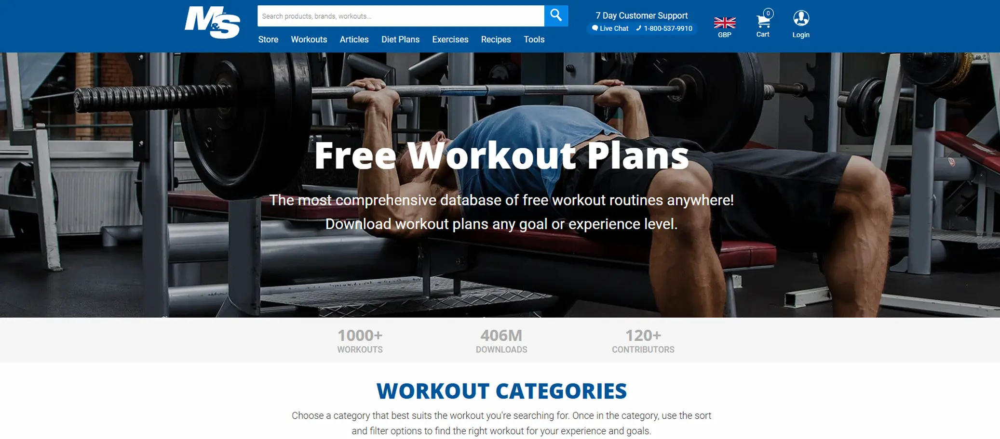
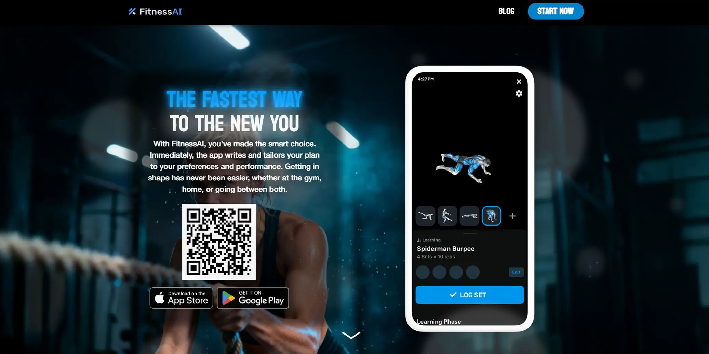
User Persona
To ground design decisions in real user needs rather than assumptions, a persona was developed based on observed gym-goer behaviours. Rather than designing for an abstract "user", this persona gave the project a specific person to design for — with concrete goals, frustrations, and habits. Every layout decision that followed was tested against the question: would Alex find this clear and useful?
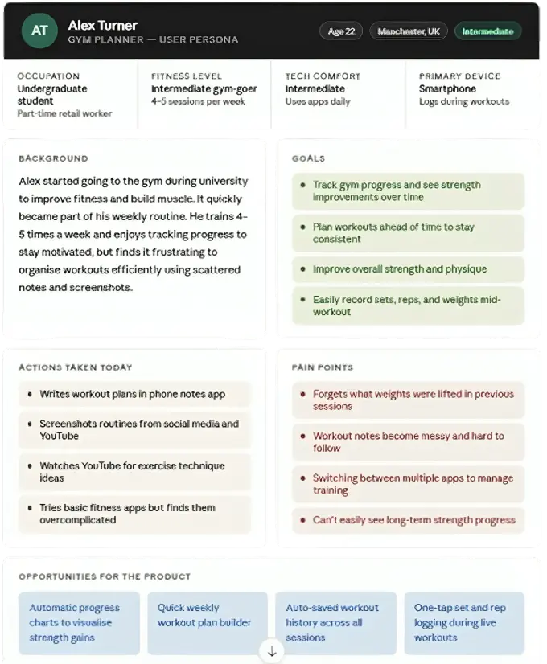
Designing with Alex in mind kept the project focused. Features that did not serve his core goals — plan a session, log it quickly, see progress — were deprioritised. The persona prevented scope creep and helped justify design decisions like the dashboard-first layout and minimal navigation depth.
Ideation — Crazy 8's
Before committing to any single layout direction, Crazy 8's sketching was used to generate eight distinct interface concepts in rapid succession. Each sketch was limited to one minute — forcing quick, low-fidelity thinking without overthinking. Concepts explored included a single-column timeline view, a card-grid workout library, a split-pane session builder, and a minimal list-based logger. The sketches were then compared against the persona's goals to identify which patterns best supported quick session setup and easy progress tracking.
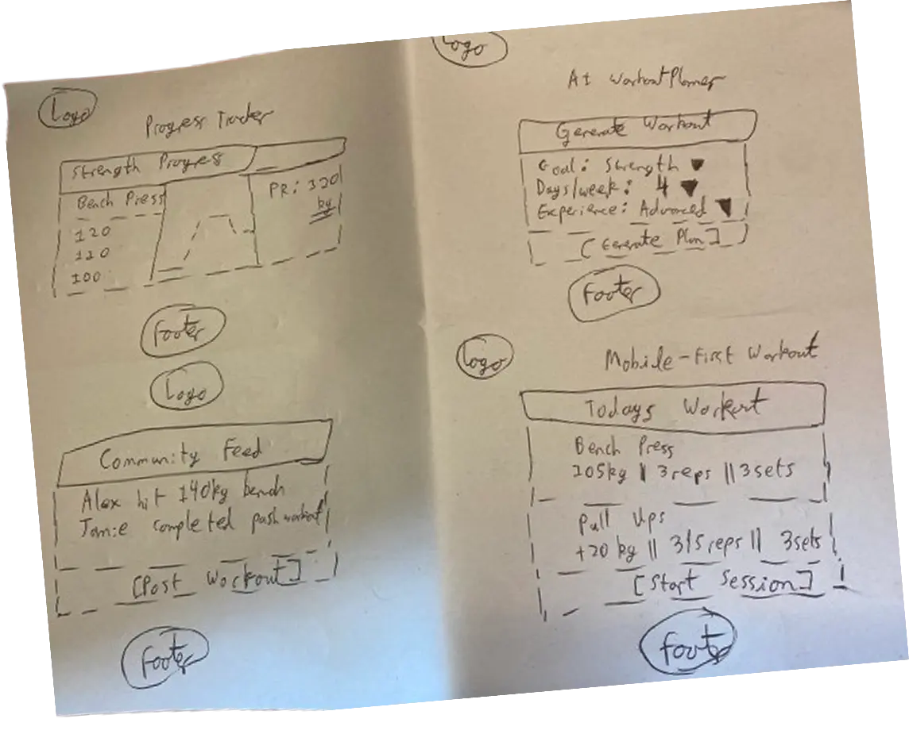
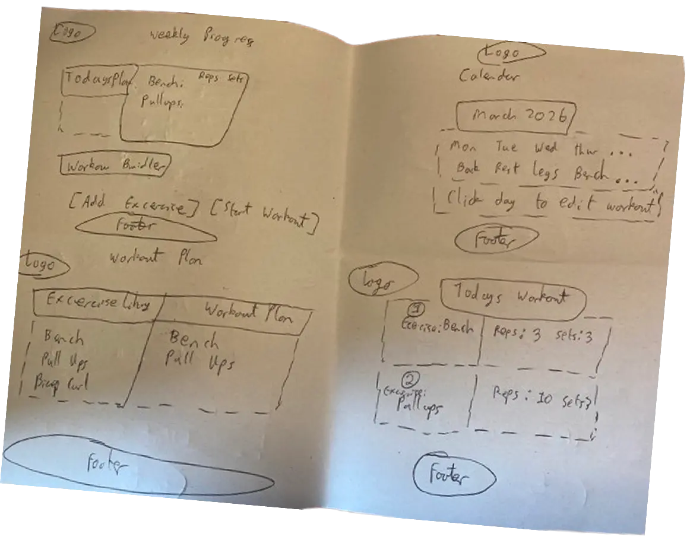
Low-Fidelity Wireframes
Low-fidelity wireframes were created in Figma to establish the core layout structure before any visual design decisions were made. The goal at this stage was purely structural — testing whether the information architecture made sense, how sessions and exercises would be grouped, and whether navigation between views felt intuitive. Separate desktop and mobile layouts were produced to ensure the design worked across both contexts from the outset.
High-Fidelity Prototype
With the structure validated through lo-fi wireframes, the high-fidelity prototype added the full visual layer — colour palette, typography, spacing, iconography, and component states. The prototype was made interactive in Figma so users could navigate between screens during testing. Key decisions included a dark sidebar for the dashboard, a card-based workout builder, and a consistent header pattern across all pages to reduce cognitive load.
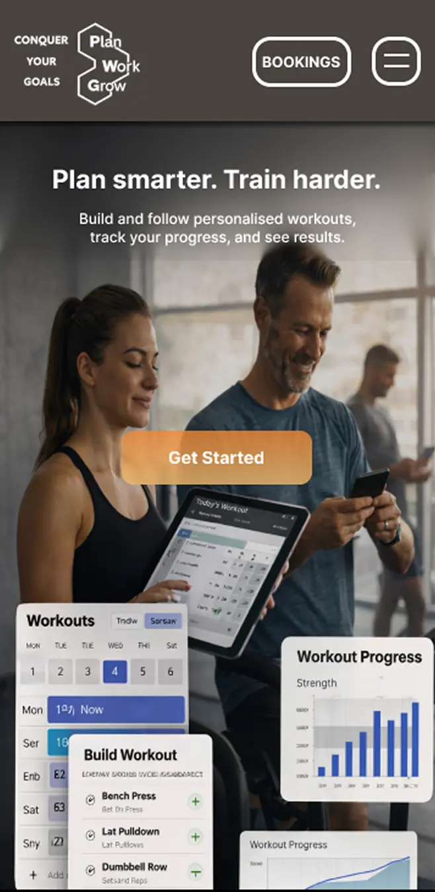
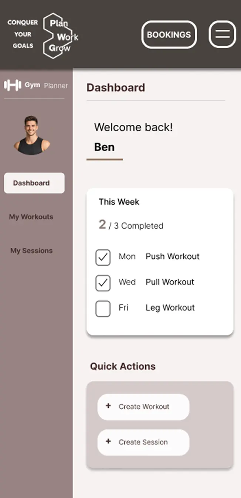
User Testing
A moderated usability testing workshop was conducted with 3 participants, each given a set of tasks to complete using the high-fidelity Figma prototype. Participants were asked to think aloud throughout, surfacing both moments of confusion and points of confidence. Tasks included creating a new workout, adding exercises, scheduling a session, and navigating to progress tracking. The session was observed and notes were taken on where users hesitated, made errors, or expressed uncertainty.
Identified Improvements
- Added an "Enter Email" field to allow booking details to be sent without requiring user login
- Standardised layout formatting, including converting all capitalised "AM" values to "am" for consistency
- Increased the font size of phone and email in the footer and repositioned them to improve visibility and readability
- Updated navigation so sub-layer pages for "My Workouts" and "My Sessions" return to their original parent page
- Updated typography by changing "Create Workout" to "Add Workout" for clearer user context
- Improved typography and clarity for data selection during the workout creation process
- Removed drag iconography from created sessions to simplify the interface
- Updated the hero image to better reflect the context of a gym journal planner
- Added a confirmation pop-up for deleting sessions in "My Sessions"
- Enabled person name selection within the interface
Front-End Development
The application was built from scratch using HTML5, CSS3, and vanilla JavaScript — no frameworks. This decision was deliberate: the project was an opportunity to demonstrate clean, maintainable front-end code that a team could pick up and extend. Semantic HTML was used throughout for both accessibility and SEO, with landmark elements replacing generic divs wherever possible. CSS Grid handled the session planner layout, while CSS custom properties kept the colour and spacing system consistent across all pages.
- HTML5Semantic structure
- CSS3Style, grid
- JavaScriptScroll, Navigation
- ✓Semantic HTML
Heading hierarchy and landmark elements for screen reader support.
- ✓Keyboard Navigation
Full Tab navigation.
- ✓Image Alt Text
Descriptive alt attributes on all images.
- ✓WCAG AA/AAA
All focus and colour pairs tested and verified.
<!DOCTYPE html>
<html lang="en">
<head>
<meta charset="UTF-8">
<meta name="viewport" content="width=device-width, initial-scale=1.0">
<title>Gym Planner</title>
<meta name="description" content="Plan and track your gym workouts with GymPlanner. Build personalised sessions, schedule your week, and book personal trainers.">
<link rel="stylesheet" href="css/style.css">
<link rel="stylesheet" href="css/grid.css">
<link rel="preload" as="image" href="images/hero_image_mobile.png" media="(max-width: 768px)" fetchpriority="high">
<link rel="preload" as="image" href="images/hero_image_container.png" media="(min-width: 769px)" fetchpriority="high">
</head>
<body>
<header>
<nav class="site-nav">
<a href="#home" class="site-nav__logo">
<img class="logo" src="images/logo.png" alt="GymPlanner logo" width="95" height="62">
</a>
<ul class="site-nav__links">
<li><a href="#home">Home</a></li>
<li><a href="#about">About Us</a></li>
<li><a href="session_planner.html">Session Planner</a></li>
<li><a href="#footer">Contact Us</a></li>
</ul>
<div class="site-nav__right">
<a href="bookings.html" class="btn-bookings">Bookings</a>
<button id="hamburger" class="btn-hamburger" aria-controls="mobileMenu" aria-expanded="false" aria-label="Open navigation menu">☰</button>
</div>
</nav>
<nav id="mobileMenu" class="mobile-menu">
<ul class="mobile-menu__list">
<li><a href="#home">Home</a></li>
<li><a href="#about">About Us</a></li>
<li><a href="session_planner.html">Session Planner</a></li>
<li><a href="#footer">Contact Us</a></li>
</ul>
</nav>
</header>
<section class="hero" id="home">
<picture>
<source srcset="images/hero_image_mobile.png" media="(max-width: 768px)">
<img class="hero__img"
src="images/hero_image_container.png"
alt="GymPlanner workout planning preview"
width="1905" height="1092"
fetchpriority="high" decoding="async">
</picture>
<div class="hero__content">
<h1 class="hero__title">Plan smarter. Train harder.</h1>
<p class="hero__sub">Build and follow personalised workouts,<br>track your progress, and see results.</p>
<a href="session_planner.html" class="hero__cta">Get Started</a>
</div>
</section>
<section class="about" id="about">
<article class="about__row about__row--1">
<img class="about__deco about__deco--mini-bars" src="images/mini_bars.png" alt="" aria-hidden="true" width="95" height="95" loading="lazy">
<div class="about__text-block">
<p>We created this gym journal to make fitness tracking simple, flexible, and effective.</p>
<p>Training isn't always perfect. Plans change, schedules shift, and goals evolve.</p>
</div>
</article>
<article class="about__row about__row--2">
<p class="about__text-mid">
That's why our platform is built to let you plan workouts, edit them as needed,
and delete what no longer serves you…
</p>
<img class="about__deco about__deco--top-bar" src="images/top_bar.png" alt="" aria-hidden="true" width="95" height="40" loading="lazy">
</article>
<div class="about__headline-row">
<h2 class="about__headline">ALL IN ONE PLACE!</h2>
</div>
<article class="about__row about__row--3">
<figure class="about__lifter-wrap">
<!-- SVG animated lifter figure -->
</figure>
<p class="about__text-right">Whether you're starting your fitness journey or refining your routine, our goal is to give you a tool that supports real progress without unnecessary complexity.</p>
</article>
<footer class="about__closing">
<p>Fitness is built on small, daily actions.<br>Plan your workouts. Put in the work. Grow over time.<br>Your goals. Your journey. Your journal.</p>
</footer>
</section>
<footer class="site-footer" id="footer">
<div class="footer-inner">
<a href="#home" class="site-footer__logo">
<img src="images/logo.png" alt="GymPlanner logo" width="95" height="62" loading="lazy">
</a>
<address class="footer-contact">
<span>Phone: <a href="tel:+441234567">+44 1234 567</a></span>
<span>Email: <a href="mailto:[email protected]">[email protected]</a></span>
</address>
</div>
</footer>
<script src="js/hamburger.js" defer></script>
<script src="js/about.js" defer></script>
</body>
</html>Performance Optimisation
Once the build was complete, a Google Lighthouse audit was run against the deployed site to identify real-world performance gaps. The initial scores revealed that large uncompressed images were the primary drag on performance. A structured optimisation pass was carried out, targeting the specific issues the audit flagged rather than applying blanket changes.
- 80PERFORMANCE
- 100ACCESSIBILITY
- 100BEST PRACTICES
- 100SEO
Image Optimisation
Converting to WebP reduced file sizes significantly while maintaining quality and preserving transparent backgrounds.
Animation Simplification
Added a meta description tag to improve search engine optimisation to provide an overview of the purpose of the page.
BEFORE
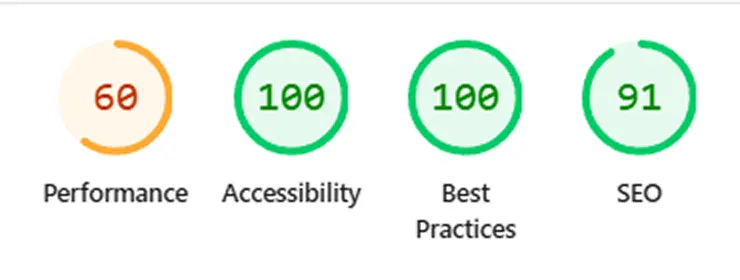
AFTER
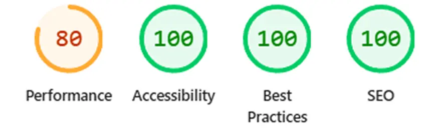
Evaluation and Testing
Every foreground/background colour pairing in the application was tested using the WebAIM Contrast Checker to validate compliance against WCAG 2.1 AA and AAA standards. This included the navbar text on its background, body text on the page background, and button states. The results confirmed all key pairings exceeded the minimum 4.5:1 ratio required for AA compliance, with the primary text pair achieving a 13.05:1 ratio — well into AAA territory.
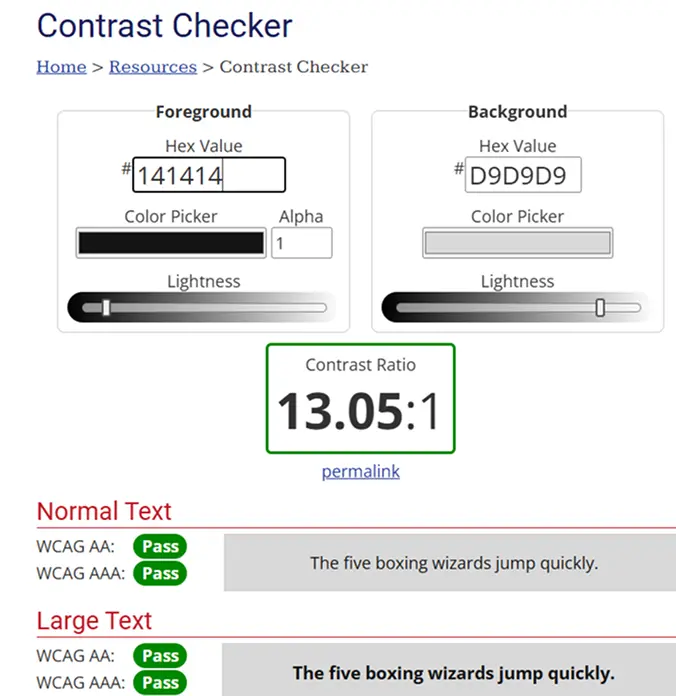
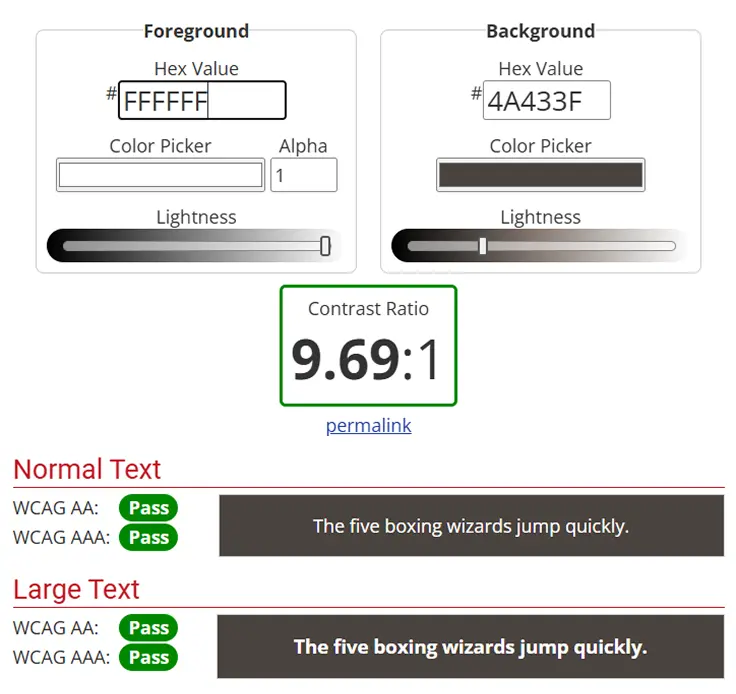
Version Control
Development tracked with Git throughout. Regular commits provide a clean, documented record of progress.
View on GitHub ↗Final Outcome
The Gym Planner web application provides a simple and effective workout planning experience, helping users organise and track their training sessions more easily.
- Clear Workout Structure
Users can organise workouts and exercises in a structured format.
- User-Friendly Interface
Clean design makes logging workouts quick and intuitive.
- Mobile Responsive
The interface works across desktop and mobile devices.
- Improved Usability
Clear navigation and layout hierarchy improve overall usability.
- Performance Improved
Optimised assets and refined code improve loading performance.
- User-Centred Design
Design decisions were guided by research and user feedback throughout the project.